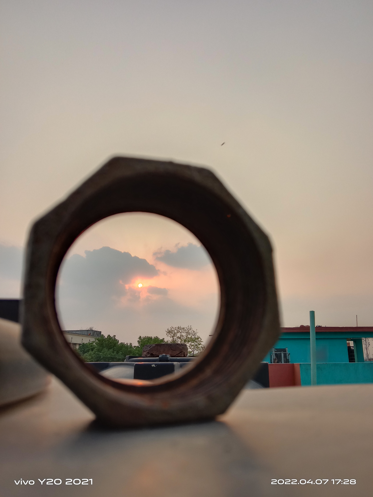
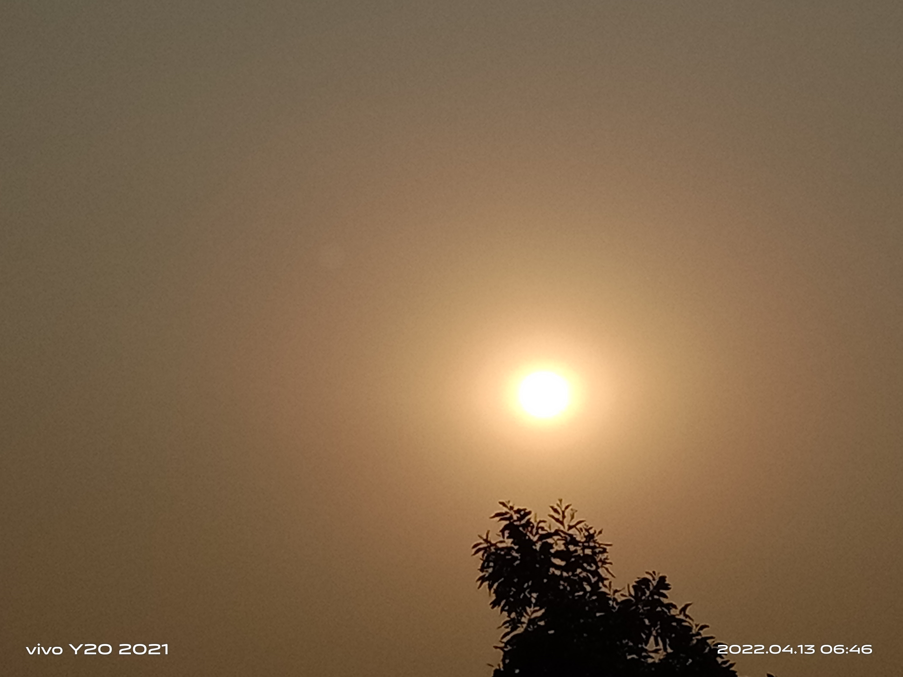

Web design refers to the designof websites. It usually refers to the user experience aspects of website development rather than software development. Web design used to be focused on designing websites for desktop browsers; however, since the mid-2010s, design for mobile and tablet browsers has become ever-increasingly important.
TPI


Our Course:
Web Design
Web Development
It support
Graphic Design
App Development
Tour Group:
Vromon Bilas
Bondhu
Cholo Ghure Asi
Traval
Bonolata
Traffice Jam:
Traffic jams are something that happens a lot in cities everywhere. They occur when there are too many cars on the road, and the traffic slows down or stops completely. This can be because of accidents, road construction, or just too many cars all trying to use the same road at once. Traffic jams can make people feel annoyed, make them late, and even cause them to miss important things like appointments. They can also be risky because drivers might get impatient and do dangerous things to try to get through the traffic. It’s really important to stay patient and careful when driving in traffic jams to stay safe and avoid accidents.
Bangladesh
id
name
country
cgpa
01
nitima
bangladesh
3.84
02
promi
bangladesh
3.94
Hello Bangladesh
Bangladesh,[a] officially the People's Republic of Bangladesh,[b] is a country in South Asia. It is the eighth-most populous country in the world and twelfth-most densely populated with a population of 173,562,364 in an area of 148,460 square kilometres (57,320 sq mi). Bangladesh shares land borders with India to the north,